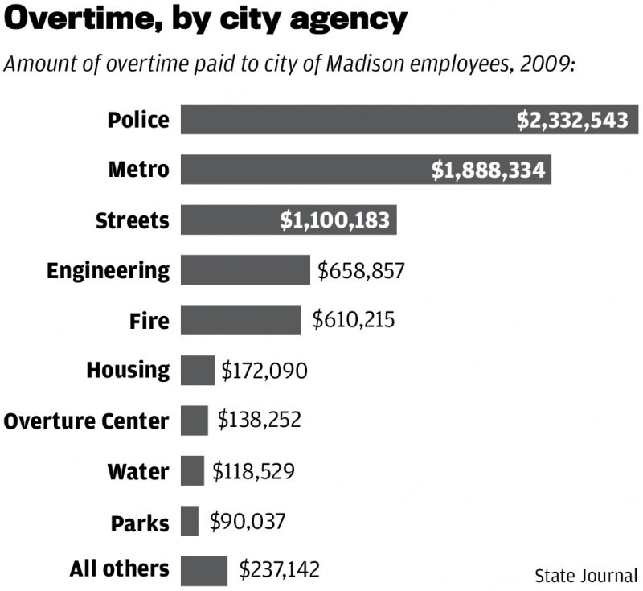

City paid $7.3 million in overtime last year
Wisconsin State Journal, June 8, 2010
By DEAN MOSIMAN and Nick HEYNEN
Metro Transit employees, mostly experienced bus drivers, easily amassed the most overtime among individual city employees in 2009, a Wisconsin State Journal analysis of city records shows.
But addressing the issue of six-figure driver salaries won't be easy for city officials. The drivers union last month overwhelmingly rejected a tentative contract deal between the city and union leadership that would have changed rules channeling overtime and extra earnings to the most senior employees.
The city and the union are now entering contract mediation.
"We're looking at opportunities to address some of these things," Mayor Dave Cieslewicz said.
Overall, the city paid out more than $7.3 million in overtime in 2009, which accounted for about half of the extra earnings that went to city workers that year, according to the newspaper's analysis. In all, more than $15 million in extra earnings were paid out, including 49 workers who took home more than $25,000 above their base pay.
The State Journal first revealed in February that experienced city bus drivers took advantage of generous overtime rules to jack up their pay and pad their pensions. But the new analysis more broadly examines the city's salary data, including overtime and payouts for vacation and sick time.
The Police Department had the most overtime, about $2.3 million, $150,000 over budget. Then came Metro, where absenteeism has led to more overtime, at about $1.9 million, or $400,000 over budget. The Streets Division, which can pile up overtime responding to snowstorms, had $1.1 million in overtime, $670,000 above budget.
With the exception of Streets, which plowed a lot of snow in December, all major agencies used savings in regular salaries to end the year within their total budget.
The public expects overtime in some areas, such as policing or snow plowing, experts said.
Charles Carlson, a compensation expert at the Middleton office of Gallup Inc., a management consulting company best known for public polling, said overtime isn't always bad for budgets because municipalities use it to avoid the higher cost of hiring more personnel with benefits.
Higher pay concentrated in a few hands
The city's biggest concern and perception problem is at Metro. That's because its most experienced drivers with the highest base salaries get first crack at overtime and opportunities to earn "spread time" - when a work day, regardless of hours worked, spans more than 11.5 hours.

The rules don't mean more overtime costs but concentrate extra pay in fewer hands, city officials said. The extra pay also lets those employees boost their state retirement income, which is based on an average of the three highest earning years.
Bus driver John E. Nelson got $78,571 in overtime and $16,134 in spread time and earned a total $159,258 last year. He was one of seven drivers to earn more than $100,000 last year. Nelson's base pay was $58,979.
Fourteen bus drivers were among the top 25 highest overtime earners, the data shows.
Those who drove the most, including Nelson, worked 50- to 80-hour weeks. All the overtime, however, didn't compromise safety, Metro General Manager Chuck Kamp has said, adding that the drivers with high earnings had excellent safety and customer relations records.
But Cieslewicz has vowed to end six-figure driver earnings and is working with Metro management and the bus drivers union, Teamsters Local 695, to reduce absenteeism and change parts of the contract.
In May, Teamsters rank and file "soundly" rejected a tentative deal that would have capped overtime at 24 hours per week, said city Human Resources Director Brad Wirtz. It also would have changed rules for spread time and allowed more flexibility in using part-time workers.
In exchange, the city offered to add $40,000 to the $300,000 now paid to cover health insurance for retirees, Wirtz said. Like contracts recently settled with other unions, the tentative deal had no pay increase in 2010 and 2011, with a 3 percent raise in the final paycheck of 2011. But the Teamsters deal also included a third year with a 2 percent raise in 2012.
Kamp said that he was hopeful for a breakthrough and that both sides "are negotiating in good faith."
Teamsters leader Gene Gowey did not return phone calls.
Paying overtime sometimes saves money
Overtime in other city agencies is more typically spread among more employees and often can be tied to events, city officials and union leaders said.
Dan Frei, president of the city police officers union, said overtime can be driven by serious crimes, such as a murder, or special events, such as Halloween. A detective got $26,104 and a police officer $22,679 in overtime last year, the analysis shows.
Some overtime costs, Frei said, are covered by grants or organizations that require security, like the Ironman Triathlon.
Central District Police Capt. Mary Schauf said overtime is a cost-efficient way to fund programs such as the Downtown Safety Initiative, which puts extra officers on the streets for three or four hours on certain days, including bar closing time on weekends, when crime tends to increase.
Overtime has been less of an issue in the Fire Department since 1998, when the union proposed a program under which staff can be sent home after minimum needs are met each day and called back when staffing is short.
The city, which has reached agreements with four unions - Firefighters Local 311, police and fire supervisors and stagehands - is still negotiating with eight other unions whose contracts expired at the end of last year.
Base pay, not overtime or extra earnings, is the centerpiece of most negotiations, Wirtz said.
"That's the meat of bargaining," he said.
A 1 percent, across-the-board pay increase, including directly variable fringe benefits, would cost about $2.2 million, comptroller Dean Brasser said.
The last union contracts generally delivered 3 percent raises for 2008 and 2009.
City and union leaders said they couldn't comment on the details of current negotiations.
- Reporter Sandy Cullen contributed to this story.
In accordance with Title 17 U.S.C. Section 107, this material is distributed without profit to those who have expressed a prior interest in receiving the included information for research or educational purposes.